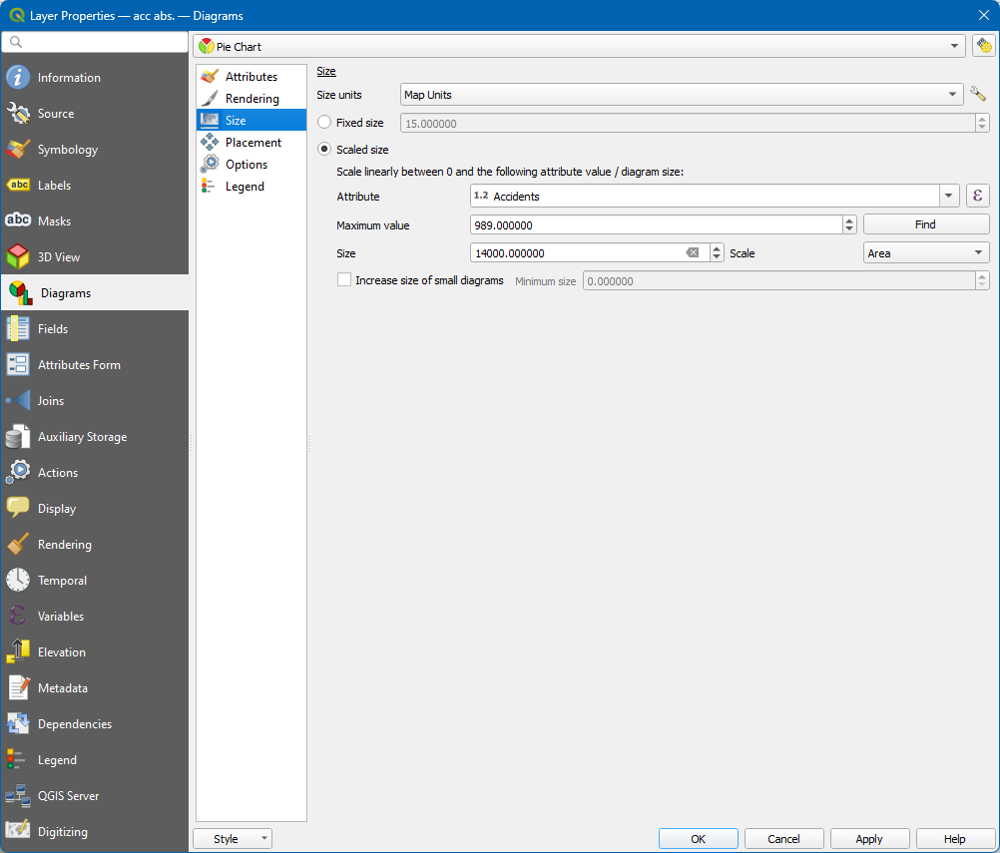
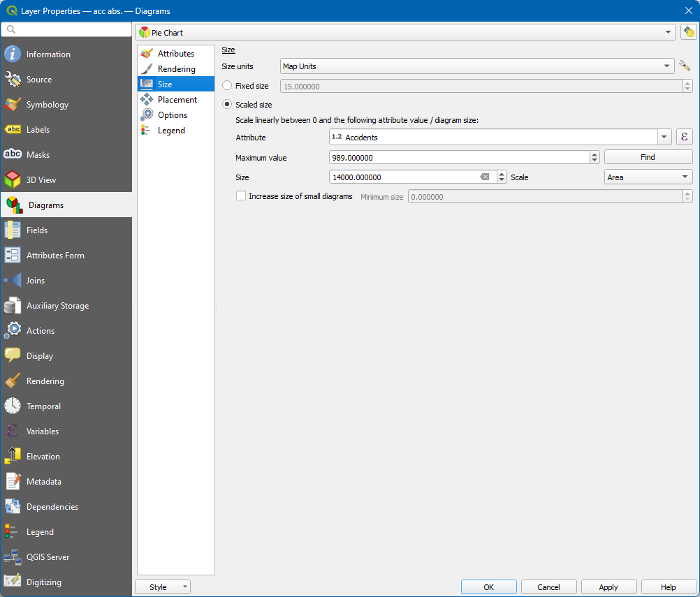

Results
In 2020, 2,724 people lost their lives in road traffic accidents in Germany. According to preliminary results from the Federal Statistical Office, this was 322 fatalities or 10.6% fewer than in 2019. This means that the number of road deaths reached its lowest level since statistics began more than 60 years ago. The number of injuries also fell in 2020 compared to the previous year, by 14.7% to around 328,000 people.


 
